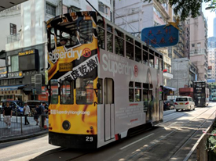

<!DOCTYPE html PUBLIC "-//W3C//DTD XHTML 1.0 Strict//EN" "http://www.w3.org/TR/xhtml1/DTD/xhtml1-strict.dtd">
<html lang="zh-tw">
<html xmlns="http://www.w3.org/1999/xhtml">
<meta http-equiv="X-UA-Compatible" content="IE=edge,chrome=1">
<script type="text/javascript">
<!--
function MM_swapImgRestore() { //v3.0
  var i,x,a=document.MM_sr; for(i=0;a&&i<a.length&&(x=a[i])&&x.oSrc;i++) x.src=x.oSrc;
}
function MM_preloadImages() { //v3.0
  var d=document; if(d.images){ if(!d.MM_p) d.MM_p=new Array();
    var i,j=d.MM_p.length,a=MM_preloadImages.arguments; for(i=0; i<a.length; i++)
    if (a[i].indexOf("#")!=0){ d.MM_p[j]=new Image; d.MM_p[j++].src=a[i];}}
}

function MM_findObj(n, d) { //v4.01
  var p,i,x;  if(!d) d=document; if((p=n.indexOf("?"))>0&&parent.frames.length) {
    d=parent.frames[n.substring(p+1)].document; n=n.substring(0,p);}
  if(!(x=d[n])&&d.all) x=d.all[n]; for (i=0;!x&&i<d.forms.length;i++) x=d.forms[i][n];
  for(i=0;!x&&d.layers&&i<d.layers.length;i++) x=MM_findObj(n,d.layers[i].document);
  if(!x && d.getElementById) x=d.getElementById(n); return x;
}

function MM_swapImage() { //v3.0
  var i,j=0,x,a=MM_swapImage.arguments; document.MM_sr=new Array; for(i=0;i<(a.length-2);i+=3)
   if ((x=MM_findObj(a[i]))!=null){document.MM_sr[j++]=x; if(!x.oSrc) x.oSrc=x.src; x.src=a[i+2];}
}
//-->
</script>
<head>
<link rel="SHORTCUT ICON" href="images/compal-wbe-logo.ico"/>
	<meta name="Generator" content="" />
	<meta name="Author" content="haco 吳淑玲 hacodog@gmail.com" />
    <meta name="copyright" content="本網頁著作所有">
	<meta name="Keywords" content="仁寶園地" />
	<meta name="Description" content="這是屬於仁寶人的園地" />

    <meta http-equiv="Content-Type" content="text/html; charset=utf-8"/>
    <title>員工關係部</title>
    <meta http-equiv="Content-Script-Type" content="text/javascript" />
	<meta http-equiv="Content-Style-Type" content="text/css" />

    <link rel="stylesheet" href="css/2-1-style.css" type="text/css" />
    <!--[if gte IE 5]>
    <style>
    #container {
    	margin-left: -401px;
    }
    </style>
    <![endif]-->
<style type="text/css">
<!--
body {
	background-image: url(images/bg_2.gif);
	background-repeat: repeat-x;
	background-position:top;
	background-color: #FFF;
}
-->
</style>     
</head>

<body onload="MM_preloadImages('images/info_more02.gif')">
<!-- Master Container: Centered and 900px wide -->
<div id="top">
      
      <iframe src="topframe.html" width="1920" height="70
      " marginwidth="0" marginheight="0" scrolling="no" frameborder="0" align="center"></iframe>
  </div>

<div id="container">
    <div id="content">
      <div id="company">
      
       <div id="columnsleft_2">
        <div id="columnsTitle4"><font size="+3">平</font>鎮廠</div>
        <!--
         <div id="columnsTitle2">醫護室介紹</div>
         -->
         <div id="images"></div>
         <!--
         <div id="columnscopy3">台北總部</div>
         <div class="A2text" id="columnscopy2">香港，一個擁有新舊交錯風格的城市，而我選擇了這個城市，當作我人生自由行的第一站。 為了利用短暫的三天兩夜遊玩到大部分的景點與品嚐在地的美食，早出晚歸的行程是一定要的... <a href="#" target="0" onmouseover="MM_swapImage('Image4','','images/info_more02.gif',1)" onmouseout="MM_swapImgRestore()"></a></div>
      -->
   </div>
      
    <div id="columnsright_3">
    <div id="columnsTitle4"><font size="+3"> </font></div>
      <table width="800" border="0" cellspacing="2" cellpadding="10">
        <tr>
          <td width="30%" align="center" bgcolor="#BFBFBF">位置</td>
          <td bgcolor="#A6A6A6">平鎮舊廠1F</td>
        </tr>
        <tr>
          <td align="center" bgcolor="#BFBFBF">服務時間</td>
          <td bgcolor="#A6A6A6">護理人員服務時間：週一~週五(09:00~17:00)</td>
        </tr>
        <tr>
          <td align="center" bgcolor="#BFBFBF">服務項目</td>
          <td bgcolor="#A6A6A6">1.健康衛教資訊發放及諮詢<br />
            2.緊急傷病處理 <br />
            3.辦理員工健康檢查<br />
            4.辦理員工健康促進活動<br />
            5.健康管理相關業務 <br />
            6.哺乳室管理<br />
            7.醫師定期駐點諮詢服務(請至<a href="https://health.compal.com/ehc-cp/s/m/health/appointment/clinic" target="_blank">健康管理系統預約</a>)<br />
            <br />
            *礙於醫療法令規定，醫務室不提供藥物治療，僅提供簡易外傷護理。員工若有傷病相關之醫療需求，應到合格醫療院所進行治療。 </td>
        </tr>
        <tr>
          <td align="center" bgcolor="#BFBFBF">設備儀器</td>
          <td bgcolor="#A6A6A6">身高體重計、血壓計、簡易外傷處理相關醫材、額溫槍、觀察休息床(僅供身體不適者短時間使用)、小冰箱(僅供哺乳媽媽放置母奶用，不提供放置私人物品)</td>
        </tr>
        <tr>
          <td align="center" bgcolor="#BFBFBF">醫藥箱設置位置</td>
          <td bgcolor="#A6A6A6"><table width="100%" border="0" cellspacing="0" cellpadding="0">
            <tr>
              <td width="11%" valign="top">【舊廠】</td>
              <td>1P1F sever、1P1F成品倉、1P1F料倉、1P2F                料倉、1P2F修護課、1P2F 030專案組</td>
            </tr>
            <tr>
              <td valign="top">【新廠】</td>
              <td>2P1F廠務處、2P1F IPC營運處、2P2F辦公室                走道、2P3F平鎮營運處、2P4F 企業資料部、                2P5F IPC營運處、2PB1F維護課</td>
            </tr>
            <tr>
              <td>【宿舍】</td>
              <td>2F</td>
            </tr>
          </table></td>
        </tr>
      </table>
    </div>
      
     </div>
  </div>
</div>
  <!-- end #container -->
  </body>
</html>
